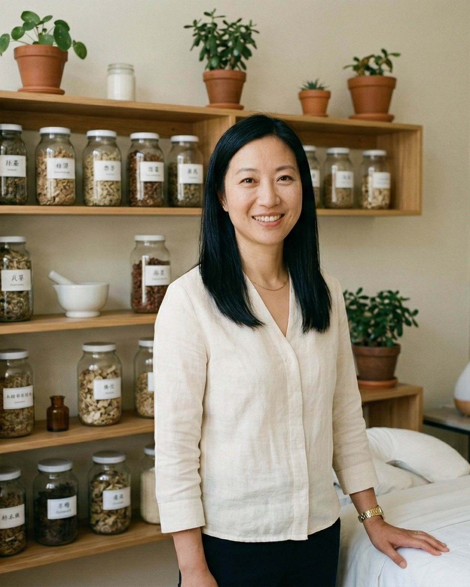

Hello, I'm Ming
I'm a BAcC-registered acupuncturist and Traditional Chinese Medicine practitioner based in Harborne, Birmingham. With over 12 years of clinical experience, I've treated thousands of patients for conditions ranging from chronic pain and migraines to fertility challenges and anxiety.
I grew up in a family where Traditional Chinese Medicine was simply part of everyday life. My grandmother was a herbalist in Guangzhou, and I always knew I wanted to bring this ancient wisdom to the UK. After training at the London School of Acupuncture, I spent several years working in multidisciplinary clinics before opening my own practice in Birmingham.
When I'm not in the treatment room, you'll find me tending my herb garden, practising tai chi in Cannon Hill Park, or exploring the canals of the Jewellery Quarter with my dog, Lotus.
My Philosophy
I believe the body has a remarkable capacity to heal itself when given the right support. My role is to identify where your energy is blocked or depleted, and to gently encourage your body back into balance.
I treat the whole person, not just the symptoms. In our initial consultation, I'll take time to understand your health history, lifestyle, diet, and emotional wellbeing. This holistic picture allows me to create a treatment plan that addresses root causes rather than simply masking pain.
Every patient is unique, and every treatment I give is tailored to the individual. I combine acupuncture with cupping, moxibustion, and dietary advice as needed to achieve the best possible results for you.
Qualifications & Memberships
I am committed to the highest standards of professional practice and ongoing development.
BSc (Hons) Acupuncture
London School of Acupuncture & Traditional Chinese Medicine — three-year degree programme.
BAcC Registered
Full member of the British Acupuncture Council — the UK's leading self-regulatory body for acupuncture.
Fertility Acupuncture
Post-graduate diploma in fertility acupuncture and reproductive health from the Zita West network.
DBS Enhanced Check
Current and verified — ensuring the highest standards of patient safety and trust.
CPD Accredited
Regular continuing professional development in pain management, women's health, and mental wellbeing.
Fully Insured
Professional indemnity and public liability insurance through Balens specialist practitioner cover.
What to Expect
From your first enquiry to feeling the benefits, here's how we'll work together.
Free Discovery Call
We start with a free 15-minute phone call where you can describe your symptoms and ask any questions. I'll give you an honest assessment of whether acupuncture is likely to help.
Detailed Consultation
Your first appointment includes a thorough 90-minute consultation — health history, pulse and tongue diagnosis, and your first acupuncture treatment.
Ongoing Treatment
Follow-up sessions last approximately 60 minutes. I'll monitor your progress, adjust the treatment, and provide lifestyle advice to support your recovery.